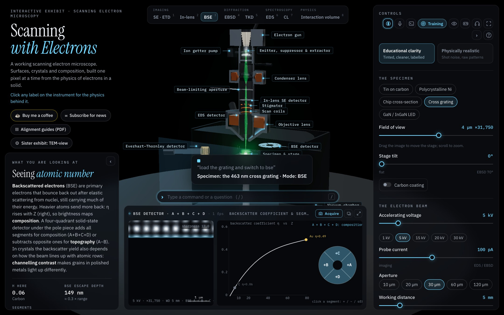
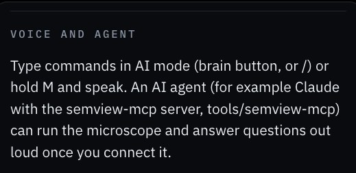
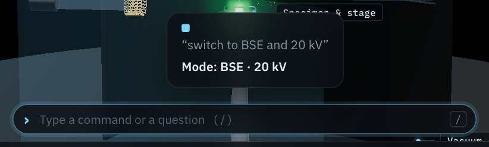
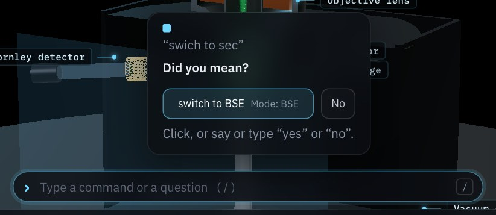
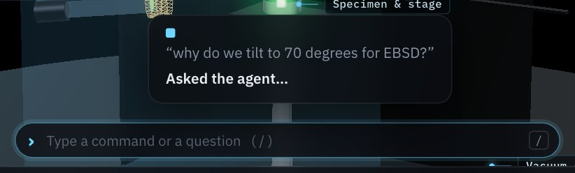
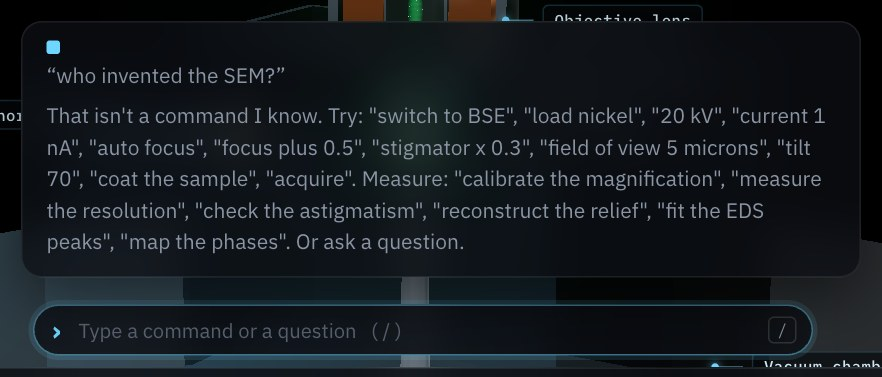
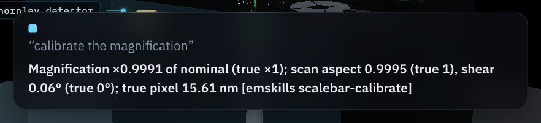
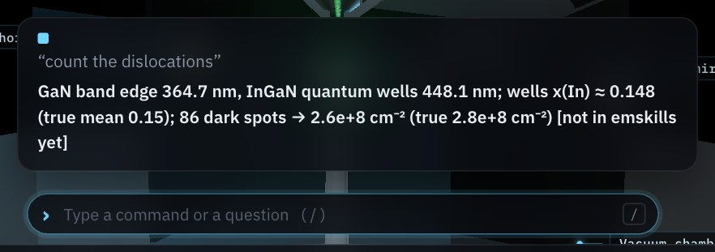

Connect Claude, OpenAI Codex, Ollama or another MCP client to SEM-view; use emskills skills with an agent; contribute a skill; and test commands beyond the built-in ones.

The Model Context Protocol (MCP) lets an AI client call tools on your computer. SEM-view ships an MCP server, semview-mcp, with tools to simulate data headlessly and to drive an open exhibit. emskills skills describe analysis tasks that an agent can run on that data. The steps: install the server, register it with an AI client, connect the exhibit, test commands, use skills, and contribute a skill.
git clone https://github.com/Advanced-EM/SEM-viewgit clone https://github.com/Advanced-EM/SEM-view
cd SEM-view/tools/semview-mcp
npm install
node test.mjs # headless check: all lines should start with "ok"Note the full path of server.mjs; the client configurations below need it. In the examples it is written /PATH/TO/SEM-view/tools/semview-mcp/server.mjs.
The client starts the server itself when it starts. Register it with one client and restart that client.
claude mcp add --scope user semview -- \
node /PATH/TO/SEM-view/tools/semview-mcp/server.mjsEdit claude_desktop_config.json (macOS: ~/Library/Application Support/Claude/; Windows: %APPDATA%\Claude\), keeping any servers already listed:
{
"mcpServers": {
"semview": {
"command": "node",
"args": ["/PATH/TO/SEM-view/tools/semview-mcp/server.mjs"]
}
}
}The same mcpServers block works in Cursor (~/.cursor/mcp.json), LM Studio (mcp.json) and Gemini CLI (~/.gemini/settings.json).
Add to ~/.codex/config.toml:
[mcp_servers.semview]
command = "node"
args = ["/PATH/TO/SEM-view/tools/semview-mcp/server.mjs"]Ollama has no MCP client of its own. Use ollmcp (MCP Client for Ollama) with a model that supports tool calls, such as qwen2.5:7b or qwen3. Save the Claude Desktop block above as servers.json, then:
pip install ollmcp
ollama pull qwen2.5:7b
ollmcp --model qwen2.5:7b --servers-json servers.jsonSmall local models call tools less reliably. Give short, direct requests, one step at a time.
Result. The client lists the semview server with ten tools. In Claude Code, run claude mcp list; in other clients, look in the tools or connectors menu.
https://advanced-em.github.io/SEM-view/, or a local copy (python3 -m http.server 8767 in the repository folder, then http://localhost:8767).exhibit_status and reports the mode, specimen and optics.Result. The exhibit shows Agent connected, and the agent can read and change it.
cd SEM-view/tools/semview-mcp
node test.mjs --live # then select Connect agent within 90 sThis drives an open exhibit without an AI client: it changes settings, acquires, and checks the answers.
ws://127.0.0.1:8792, then 8793. Each AI client starts its own copy of the server, and only one copy can use a port. If two clients are running, the exhibit connects to whichever server holds 8792. Run one client at a time, or start a second one with SEMVIEW_PORT=8793 in its environment.| Variable | Default | Meaning |
|---|---|---|
SEMVIEW_PORT | 8792 | Local WebSocket port for the exhibit |
SEMVIEW_ORIGINS | exhibit site | Other web origins allowed to connect, besides localhost |
SEMVIEW_OUT | ./semview-out | Where simulations and saved acquisitions are written |

Open the command bar with the brain button at the top of the controls, or press /. Hold M to say a command instead of typing it. The exhibit handles each sentence in one of four ways.
| Sentence | What happens | Agent needed |
|---|---|---|
| Exact built-in command | Runs at once (Fig. 10a) | No |
| Close miss or misspelling | “Did you mean…?” with buttons; answer yes, no, or “the second one” (Fig. 10b) | No |
| Anything else, with an agent connected | Passed to the agent: “Asked the agent…” (Fig. 10c). The agent receives it through exhibit_wait_for_voice and answers with exhibit_say, acting with the other tools if asked | Yes |
| Anything else, no agent | Not understood; the exhibit lists examples (Fig. 10d) | No |




The agent receives sentences only while it is waiting for them. Tell it once, in the AI client:
Listen to me in the exhibit: call exhibit_wait_for_voice, answer each question with exhibit_say in two or
three sentences, use the other semview tools when I ask for something, and keep listening until I say stop.Run these in order after Step 3, with the listening loop running. Tick each row that behaves as expected.
| Type or say | Expected | |
|---|---|---|
| switch to BSE | Mode changes at once; caption “Mode: BSE” | |
| load nickel and acquire | Specimen changes and the detectors are recorded; caption lists both | |
| swich to bse | “Did you mean switch to bse?”; “yes” runs it | |
| focus plus zero point five | Focus set to +0.5 µm | |
| why do we tilt to 70 degrees for EBSD? | “Asked the agent…”, then a spoken answer about backscattered electrons leaving toward the camera | |
| set up an orientation map of the nickel at 20 kV | The agent calls exhibit_set (EBSD, Ni, 20 kV; the mode sets the 70° tilt) and says what it changed | |
| image the grating and calibrate the magnification | The agent calls exhibit_set and exhibit_acquire, then exhibit_analyze with calibrate_scale, and reports the calibration with the true value | |
| compare 5 and 15 kV for this specimen | Several tool calls in sequence, then a summary; this tests multi-step planning | |
| Start a training task, then ask the agent to change the focus | The exhibit refuses the change, and the agent reports the refusal | |
| stop | The agent ends the loop |
Measurement commands run a built-in analysis and compare it with the simulator's true value. The caption names the matching emskills skill, or says the analysis is not in emskills yet (Fig. 11).
| Say | Analysis | emskills |
|---|---|---|
| calibrate the magnification | calibrate_scale | scalebar-calibrate |
| reconstruct the relief | reconstruct_relief | sem-topography |
| map the phases | phase_map | edax-phase-map |
| fit the EDS peaks | fit_eds | not yet |
| measure the resolution | fit_resolution | not yet |
| check the astigmatism | fit_focus | not yet |
| check the indexing | index_ebsd | not yet |
| count the dislocations | fit_cl | not yet |


An emskills skill is a folder with a SKILL.md manifest: front matter that names the skill and its tool call, and sections that tell an agent what the skill does, its limits, and how to call it. The registry is at github.com/emskills-mcp/em-skills and listed at emskills.org.
Claude Code loads skills from ~/.claude/skills/<name>/SKILL.md. emskills manifests include the name and description fields it needs.
git clone https://github.com/emskills-mcp/em-skills
mkdir -p ~/.claude/skills
cp -r em-skills/skills/scalebar-calibrate ~/.claude/skills/
cp -r em-skills/skills/sem-topography ~/.claude/skills/Start a new session and ask, for example: “Simulate an SE image of the cross grating at 10 kV with semview, then calibrate the magnification with the scalebar-calibrate skill and compare with the 463 nm pitch.”
Give the agent the skill's SKILL.md as instructions: add it to a Claude Desktop project, reference it from AGENTS.md for Codex, or paste it into the system prompt for an Ollama model.
simulate (headless) or exhibit_acquire with save (from the exhibit). Both write .npz with metadata.json holding the calibrations.SKILL.md and its reference implementation before installing it, as you would any software.| Tool | Purpose |
|---|---|
simulate | Headless acquisition to .npz with metadata; no browser needed |
twin | One persistent headless SEM with the Python calls: challenges, instrument profile, analyses |
exhibit_status | Is an exhibit connected, and what it shows |
exhibit_set | Change mode, specimen, kV, current, aperture, WD, focus, stigmator, field of view, tilt, coating, BSE segments |
exhibit_action | Auto focus, blank or unblank the beam, wobbler, restart a map or the Monte Carlo, narrate |
exhibit_command | Run a sentence through the exhibit's command grammar |
exhibit_acquire | Record the detectors; optionally save .npz and .png |
exhibit_analyze | Measure the live data and compare with the truth |
exhibit_say | Show a caption and speak it in the exhibit |
exhibit_wait_for_voice | Wait for the visitor's next question |
emskills-mcp/em-skills on GitHub, clone your fork, and create a branch.skills/<slug>/ with the files in the table at right.SKILL.md: the front matter below, then the sections Scope, Safety, Usage (a JSON block whose tool equals tool_call) and Reproducibility (one command that runs the check).--run:
pip install -r requirements-dev.txt
python3 scripts/validate_skills.py --run---
name: cl-dislocation-density
slug: cl-dislocation-density
technique: SEM
category: Spectroscopy
kind: SKILL.md
summary: Dislocation density from dark spots in CL maps
license: MIT
version: 0.1.0
runtime: python 3.11
tool_call: count_dislocations
description: >
One paragraph for agents: what it does and when to use it.
---| File | Contents |
|---|---|
SKILL.md | Manifest and instructions |
examples/invoke.json | A sample tool call, matching the Usage block |
fixtures/sample/ | Small test input with known truth |
fixtures/generate.py | How the fixture was made |
verify.py + requirements.txt | Reference implementation (Python runtime) |
verify.js + package.json | Reference implementation (Node runtime) |
Required front-matter keys: name, slug, technique, category, kind, summary, license, version, runtime, tool_call. Techniques: SEM, TEM, STEM, EDS, EELS, cryo-EM, FIB. The slug, name and folder must match, and the version is semver.
simulate writes calibrated .npz data for any mode. CL maps from simulate (mode cl, specimen gan) come with the true dislocation density in the analysis truth: a ready fixture for the example above.fit_eds, fit_resolution, fit_focus, index_ebsd, fit_cl and mc_summary analyses have no emskills skill yet (Fig. 11b).New sentences for the built-in grammar go in parseCommand in js/voice.js. New agent tools go in tools/semview-mcp/server.mjs (registerTool), with the matching method in js/agent.js. Add a check to tools/semview-mcp/test.mjs and open a pull request on Advanced-EM/SEM-view.
| Observation | Likely cause | Action |
|---|---|---|
| “No agent server at ws://127.0.0.1:8792 or 8793” | The AI client is not running, or the server failed to start | Start the client; check that it lists semview; run node test.mjs |
| Connected, but the agent says no exhibit is connected | Two clients are running; the exhibit joined the other one's server | Close the other client, or use SEMVIEW_PORT (Step 3) |
| Connect agent fails on the public site only | The browser blocks a web page from reaching a local server | Use Chrome or Edge, or a local copy of the exhibit |
| Questions show “Asked the agent…” but nothing is said | The agent is not in its listening loop | Give the listening instruction in Step 4 again |
| The agent stops listening after a few questions | Common with small local models | Restart the loop; use a larger model; keep requests short |
| The agent calls the wrong tool or invents arguments | Small model, or a long multi-part request | Ask for one change at a time; name the setting and value |
| Changes are refused | A training task is running | Finish or give up the task first |
| Validator fails on Usage | The Usage JSON or invoke.json does not match tool_call | Make the three agree |
Validator fails with --run | The reference implementation does not recover the fixture's truth | Run the Reproducibility command locally and fix the check |
| Item | Value or criterion | Initials | |
|---|---|---|---|
Server installed, node test.mjs passes | All lines “ok” | ||
| AI client and model | ____________________ | ||
| Exhibit connected | “Agent connected” shown; port ______ | ||
| Built-in commands | Test plan rows 1 to 4 pass | ||
| Beyond built-in commands | Test plan rows 5 to 10 pass | ||
| Skill used with the agent | Skill: ____________________ | ||
| Skill contributed (optional) | Pull request: ______________ |
SEM-view is a physics-based SEM simulator that runs in a web browser. emskills is an open registry of AI agent skills for electron microscopy. Both are open source.
advanced-em.github.io/SEM-view
github.com/Advanced-EM/SEM-view
emskills.org
github.com/emskills-mcp/em-skills
modelcontextprotocol.io